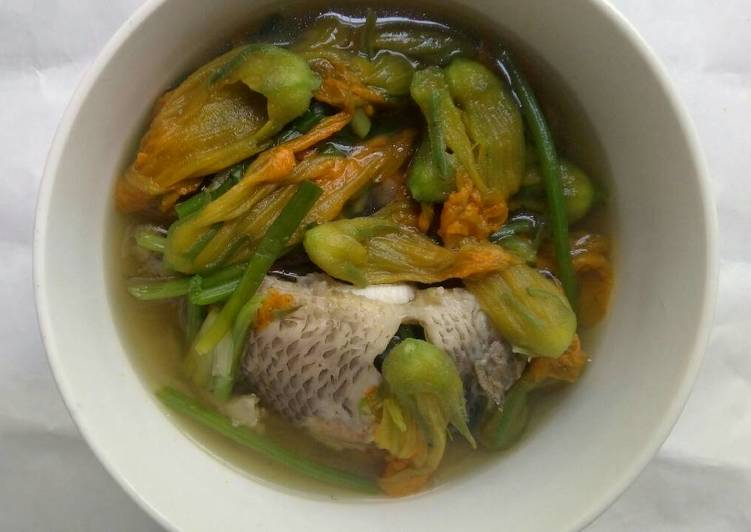

Mỗi lần anh Hai giận vợ, nếu đúng vào mùa bí rợ trổ bông, chị Hai liền nấu món canh bông bí để làm lành.
Không phải vì đó là món canh anh ưa nhất, thật ra ảnh thích canh chua hơn, nhưng phải món canh bông bí mới xoa dịu được trái tim đang rêm, bởi nó nhắc cho ảnh nhớ lại cái kỷ niệm của lần đầu hai người quen nhau:
Sáng hôm ấy, Lụa, tên con gái của chị hai, đang đội một cái thúng bông bí đi ra chợ bán. Cái thúng có dung tích bốn chục lít đó được gọi là thúng giạ, bên trong chứa đầy những bó bông bí vừa hái còn sương tấm tấm, được bó lại thành từng lọn to bằng cườm tay, chất cao ngất nghểu.
Cũng như cô gái đội trứng trong chuyện ngụ ngôn của La phông te, chỉ đang nhẩm tính xem số tiền bán bông bí, gom thêm tiền để dành trong ống tre coi có đủ để mua một chú heo con về nuôi không? Chỉ định xin ba má cho phép nuôi riêng một con heo, chờ đúng tạ thì bán lấy tiền rồi sắm cho mình cây kiềng bằng vàng mười tám. Lòng tràn ngập niềm vui, chưa kịp nhảy dựng lên thì từ phía sau một chiếc xe đạp đang thả dốc ào ào tông mạnh vào lưng làm chỉ té thiếu điều gảy gọng. Lồm cồm bò dậy, mặt đỏ phừng phừng vì giận, chưa kịp cự đã nghe một giọng ấp úng đầy mắc cở và biết lỗi của một người con trai:
-Cho tui xin lỗi nghen! Tại cái xe bị đứt thắng ngang xương.
Chỉ liếc xéo anh Hai, muốn cự mà thấy cái mặt hiền khô của ảnh ỉu xìu như bông bí nhúng nước sôi thì không đành mở miệng. Bèn chẳng nói chẳng rằng lui cui lượm lại mấy bó bông bí đã bị giập gần phân nửa. Ảnh định đề nghị đền tiền cho chỉ, nhưng trong túi chẳng có đồng nào nên nín thinh, cũng hổng dám lượm phụ cứ đứng gải đầu miết. Chỉ gom hết bông bí vô thúng với nét mặt chằm vằm, rồi đội lên đi tiếp. Anh Hai cũng dắt xe đi sau lưng không nói tiếng nào, lát sau chỉ quay lại nói như nạt:
-Sao hổng chạy cho rồi, đi theo tui làm cái giống gì?
Anh Hai lại gải đầu, đi thêm một đoạn rồi mới chịu nhảy lên xe. Hơn một tháng sau ảnh nhờ ba má mang khay trầu qua đền cái thúng bông bí ấy!
Cái món canh bông bí làm lành, được chỉ đặt toàn tâm toàn ý vào đó, nên thơm tho ngon ngọt làm sao! Để có nồi canh thật ngon, chị phải ra đồng sớm hơn mọi người để lựa từng cái bông vừa hé nở, có cánh và cọng đều mập ú ăn mới giòn và ngọt. Những bông bí vàng tươi với nhụy đầy phấn, lông măng li ti bám đầy trên cánh ấy chưa nấu mà đã gợi thèm rồi. Cái cảnh chỉ ôm cái bó bông bí tươi rói trên tay với nét mặt sung sướng pha một chút âu yếm ấy, giống hình ảnh của những cô dâu ôm hoa trong ngày cưới làm sao!
Chỉ lặt từng bông bằng cách gở bỏ mấy cái lá đài ốm, dài như những ngón tay ôm quanh chân bông. Ngắt bỏ cái nhụy bên trong một cách khéo léo để mấy cái cánh không bị giập, tước bỏ vỏ mấy cái cọng của nó, cho vô cái rổ tre mắt thưa rồi đem xuống sông rửa.
Chỉ nhen bếp bắc nồi cơm lên trước, chờ cơm sôi chắt nước ra tô, san bớt củi đang cháy qua cái lò bên cạnh, chừa lại mấy cục than đỏ vừa đủ cho cơm chín. Bỏ thêm củi vô cái lò vừa được san lửa, rồi đặt lên đó một cái nồi chứa nước đầy hơn phân nửa. Chờ nồi nước vừa sôi ục lên liền thả con cá lóc đã được làm vào, với bộ ruột được cạo sạch sẽ, bởi ảnh khoái ăn cái ruột cá lóc chấm nước mắm ớt thật cay. Cá chín được vớt ra, rỉa thịt, loại bỏ xương không để sót lại một cọng nào. Ướp vào những miếng cá trắng phau ấy, tiêu, hành, đường, nước mắm, rắc thêm một ít bột ngọt cho nó đậm đà hơn [thời đó bột ngọt rất hiếm và mắc].

.Nếu là những cơn giận nho nhỏ, ngoaì cái món canh bông bí, trong mâm còn có thêm một trách cá lòng tong kho tiêu với thật nhiều tóp mở. Nhưng với những trận lôi đình kinh thiên động địa, như cái lần chỉ nhất quyết không chịu đưa tiền cho ảnh mua xe hon đa, thì cái dĩa tôm kho tàu hết sức hấp dẩn sẽ bày tỏ tấm lòng tha thiết của chỉ dành cho ảnh.
Cơn giận của anh Hai sẽ được những vá canh đẩy trôi từ từ, tiếng cười lại vang lên trong ngôi nhà lá nhỏ, giọng ru con của chị Hai lại cất lên thật êm đềm:
-Ầu ơ! Con kiến vàng bò quanh bông bí
Anh thấy nàng có ý… anh thương.